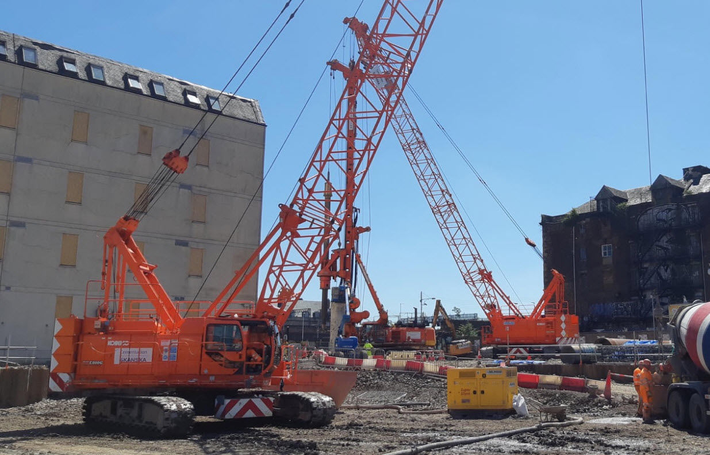

THE CRAWLER SERIES01 / 03
FLEET CONCEPT
Grounded in strength.
Built for demanding ground conditions and heavy, sustained lifts.
250TONNE CLASS
BOOM LENGTHUp to 90 m
APPLICATIONHeavy infrastructure

Big ambitions demand exceptional strength. Precision-engineered crane solutions for the projects shaping tomorrow.
The right lift starts with the right machine.
Explore the fleet built around your ambition.
Built for demanding ground conditions and heavy, sustained lifts.
Illustrative project scenarios; not a record of completed contracts.
From the Klang Valley to Sarawak’s energy corridor. Plan the right equipment, in the right place, at the right time.